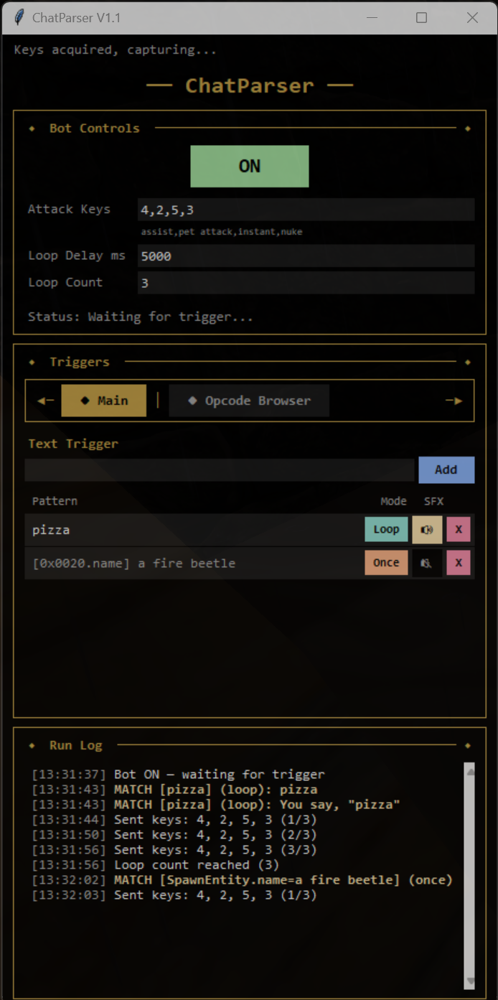
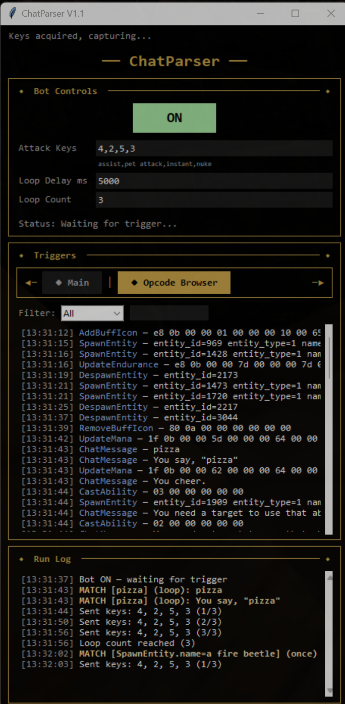
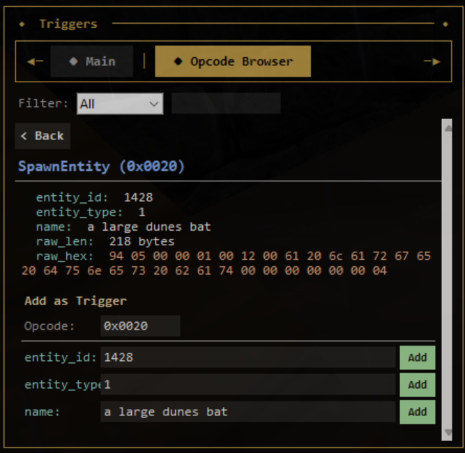

For Mammary Monsters
Organized trigger table with per-trigger controls.
Each trigger you add appears as a row in a table with its own controls. The Pattern column shows the text being matched. The Mode button toggles between Loop (repeating) and Once (single fire). The SFX button toggles the audio alert for that trigger. The red X removes it. Triggers persist between sessions in a local triggers.json file.
See ChatParser in action.

Define text patterns, configure attack keys and loop settings, and monitor trigger activity in the run log. Matched patterns fire key sequences automatically.

Browse every game message in real time. Filter by Chat, Combat, or All opcodes. Search for specific messages and click any row to inspect its parsed fields.

Click any message to see its parsed fields — entity IDs, names, raw data. Create opcode-specific triggers directly from the detail view with one click.
Everything packed into a single compact window.
Every combat message displayed in real time with timestamps. Melee attacks, spell hits, and death messages are captured directly from network packets as they arrive.
Define text patterns that match against every incoming combat message. Case-insensitive substring matching — if the pattern appears anywhere in the message, it fires. Matched lines are highlighted in the log.
Toggle a sound alert on any trigger. When that trigger matches, ChatParser plays a beep on every loop iteration so you never miss an event — even if you're tabbed out.
Each trigger can be set to Loop or Once. Loop mode repeats the key sequence at your configured delay until turned off. Once mode fires a single time per trigger match. Click the mode button mid-loop to reset.
Set which keys to send when a trigger fires. Define them as a comma-separated list (e.g. 4,2,5,3 for assist, pet attack, instant, nuke). Adjust the loop delay in milliseconds and set a max loop count (0 for infinite, or a specific number).
Same technology as ZekParser — reads network traffic passively. No injection, no memory writing, no file modification. The game doesn't know it's running.
Same capture technology as ZekParser, focused on chat.
Grab ChatParser.exe from the download link. No install needed — it's a single portable file. Right-click and run as Administrator (required for network capture).
Type a text pattern into the trigger input and click Add. Set each trigger to Loop or Once mode, toggle the audio alert, and configure your attack keys and loop delay in the settings area.
Click the ON button, then play the game. ChatParser auto-detects the game process, captures combat text in real time, and fires your triggers when patterns match. The combat log scrolls live with matched lines highlighted.
Configure keys, timing, and loop behavior.
4,2,5,3 — assist, pet attack, instant, nuke)
Download ChatParser and start monitoring combat text in real time.
Download ChatParser